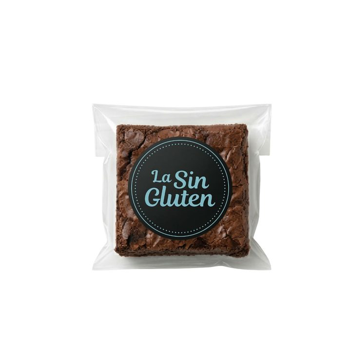
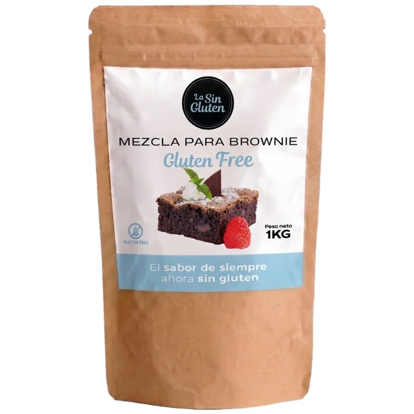
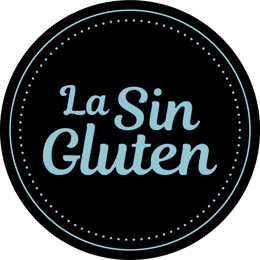
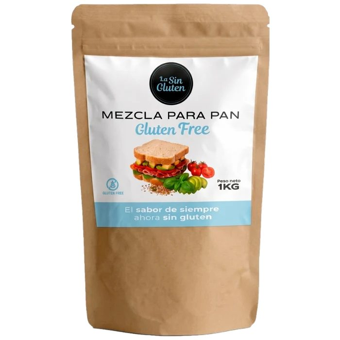
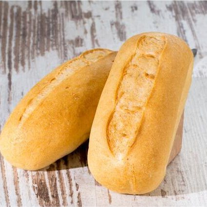
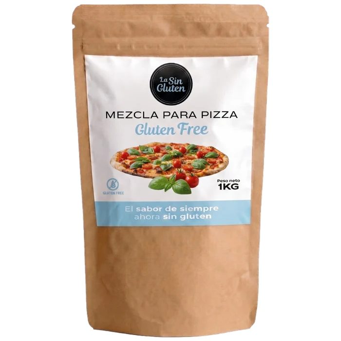
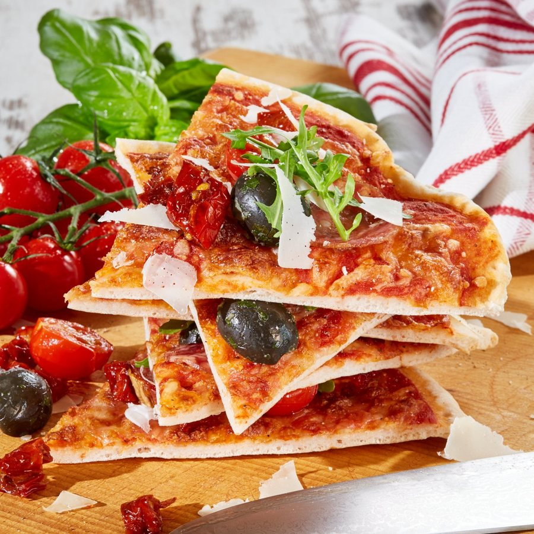
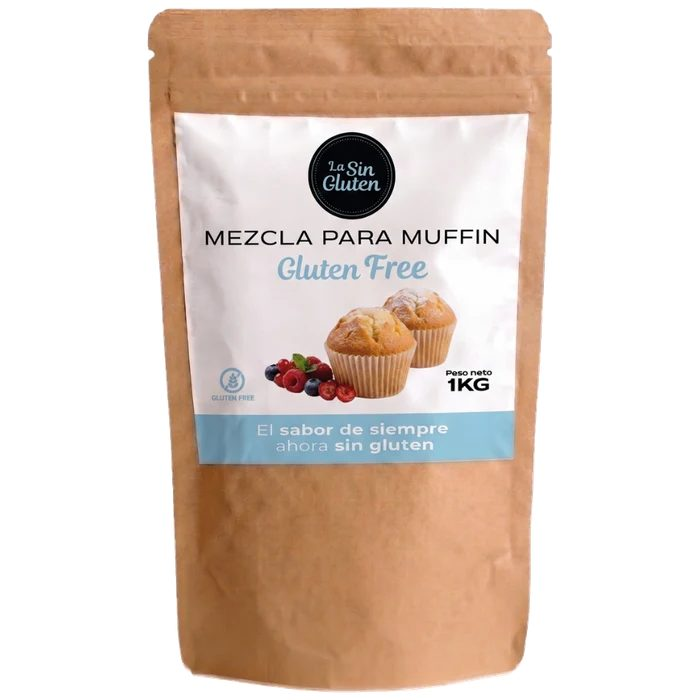
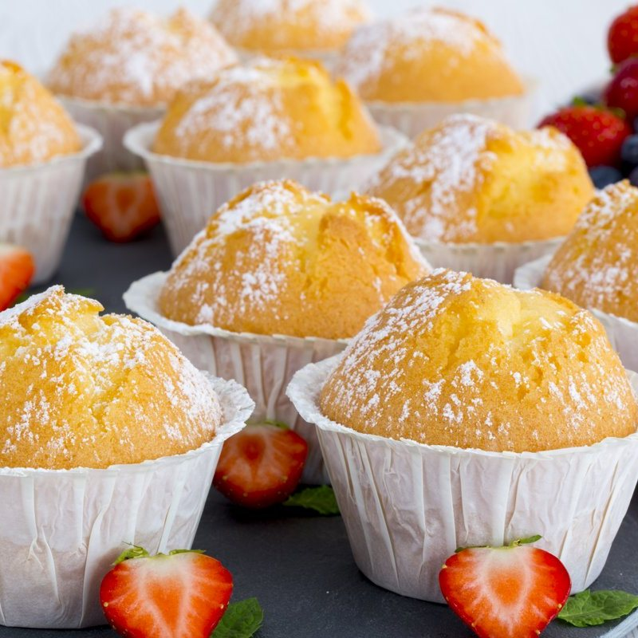

 La Sin Gluten
La Sin Gluten


Préparation pour réaliser chez soi un brownie au chocolat sans gluten, dense et fondant..
Préparation pour réaliser chez soi un brownie au chocolat sans gluten, dense et fondant.
Sucre (58 %), amidon (28 %) (amidon de pomme de terre, amidon de maïs), cacao maigre en poudre (5 %), amidon modifié (4 %), émulsifiant (<2 %) : mono- et diglycérides et esters polyglycériques d’acides gras E 471 et E 475 ; graisse de palme en poudre (<2 %) (huile de palme, sirop de glucose, protéine de lait), lactosérum (lait) en poudre enrichi en protéines (<2 %), poudres à lever (<2 %) : diphosphate disodique E 450 (i), carbonate acide de sodium E 500 (ii) ; épaississant (<2 %) : gomme xanthane E 415 ; arôme (<2 %), sel (<2 %).
| Valeurs moyennes | Pour 100 g |
|---|---|
| Énergie | 1647 kJ / 389 kcal |
| Matières grasses | 3,2 g |
| dont acides gras saturés | 2,1 g |
| Glucides | 87,8 g |
| dont sucres | 58,5 g |
| Fibres alimentaires | 1,6 g |
| Protéines | 1,5 g |
| Sel | 0,75 g |
Les valeurs nutritionnelles sont sujettes aux variations naturelles des produits naturels.

La Sin Gluten


La Sin Gluten

La Sin Gluten

La Sin GlutenNotre boutique en ligne est en espagnol. Si vous êtes dans un autre pays, ou si vous êtes un distributeur ou une marque intéressée par le private label, écrivez-nous et nous vous répondrons en français.